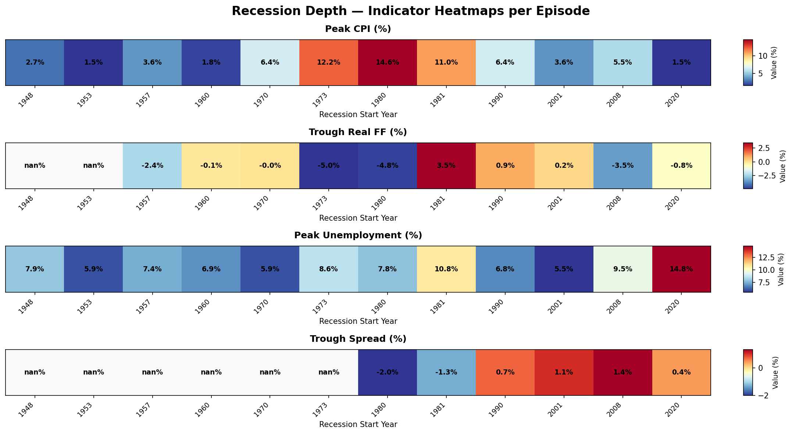
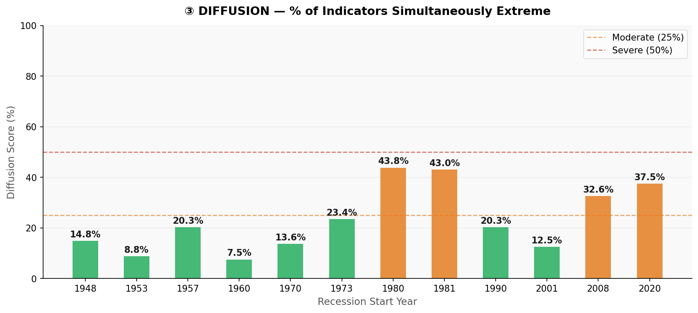

The research question
What is the most effective way to visualize complex economic information, drawing on established principles of data visualization?
The primary purpose of this project is to investigate how visual encodings, chart selection and interactivity can improve the communication of data. Macroeconomic regimes provide the case study: how do economic conditions evolve across regimes, and which indicators begin showing stress ahead of recessions?
The full report focuses particularly on the iterative design process, explaining the choices between initial diagnostic plots and the final interactive dashboard.
From exploratory plots to effective visual communication
Rather than treating charts as a final presentation step, I evaluated alternative visualizations against established design principles: minimizing chartjunk and non-data ink, maximizing useful information within the display, preserving meaningful comparisons, and using interactivity to reveal detail without visual clutter.
| Exploratory approach | Design refinement | Why it helps |
|---|---|---|
| Regime averages and dense diagnostic plots | Distributional views and simplified chart elements | Reveal variation without redundant visual detail |
| Single-strip episode timeline | Regime swimlanes | Make duration, clustering and transitions easier to compare |
| Separate recession severity plots | Normalized heatmap with hover details | Support comparisons across different metrics while retaining raw values |
| Individual leading-signal timelines | Compact lead-time and hit-rate scatter plot | Compare timing and historical reliability in one view |
The report documents these iterations, including the limitations of the initial Matplotlib diagnostics and the rationale for the final Dash and Plotly visualizations. Its central contribution is the design reasoning as well as the resulting economic analysis.
Building the macroeconomic dataset
Data is drawn from FRED, spanning inflation, monetary policy, Treasury yields, labor markets, commodity prices, housing and recession indicators. The dashboard starts in the late 1940s, although individual series begin at different dates.
Daily, weekly and monthly observations are aligned to monthly frequency for regime analysis. Transformations include year-over-year inflation, real Federal Funds rates, yield-curve spreads, commodity returns and rolling normalization. The dashboard uses the archived data supplied with the project, not a live feed.
Classifying economic regimes
Recession indicators take precedence over rule-based inflation and monetary-policy classifications. The implemented dashboard uses the following ordered classification rules.
| Regime | Classification rule |
|---|---|
| Recession | USREC = 1 or recession probability > 50% |
| High Inflation | CPI inflation > 5% |
| Overheating | CPI inflation > 2.5% and Federal Funds rate below inflation |
| Deflationary Risk | CPI inflation < 1% and Federal Funds rate < 1% |
| Goldilocks | CPI inflation between 1% and 2.5%, inclusive |
| Reflation/Cooling | Remaining observations |
Distributional views are more informative than regime averages alone. Goldilocks periods show relatively tight distributions, whereas recession outcomes span very different inflation and policy environments.
Not all recessions are alike
Consecutive months sharing a regime are grouped into episodes, allowing distinct historical downturns to be compared through duration, depth and the breadth of macroeconomic stress.


The inflationary recessions of the 1970s and early 1980s differ materially from the short but severe unemployment shock of 2020. A diffusion-style severity measure summarizes the prevalence of extreme indicator conditions across each episode.


Looking for leading indicators
For each recession or regime transition, the analysis searches a 24-month lookback window for observations meeting predefined macroeconomic stress conditions, such as yield curve inversion, elevated Treasury yields, rising oil prices and abnormal currency movements.

The final visualization highlights the 10-year–2-year spread and long-end Treasury yields as comparatively promising historical signals. Results remain sensitive to indicator availability, threshold choices and the fixed lookback horizon. A hit rate across known recessions does not measure false alarms during non-recession periods.
Interactive dashboard
The original application uses Python Dash and Plotly. It brings together time-series views, selectable regime snapshots, a historical swimlane chart, recession severity heatmaps, commodity and labor dynamics, and a leading-indicator summary.
Interact with the original visualizations, select economic regimes and compare historical episodes. The first visit may take a moment while the hosted application starts.
Launch Interactive DashboardConclusions and limitations
Distributional and episode-level analysis reveals that recessions are heterogeneous, while different indicator families capture different dimensions of macroeconomic stress.
The classifications are descriptive heuristics, not a validated forecasting model. Missing early historical series, retrospective recession designations, threshold selection and data revisions limit comparisons. Future work would evaluate false alarms, real-time data vintages and out-of-sample performance.
Project report
The report examines the visualization design decisions in greater depth, comparing the exploratory graphics with their final interactive counterparts and explaining how established visualization principles inform each refinement.